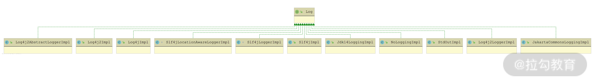
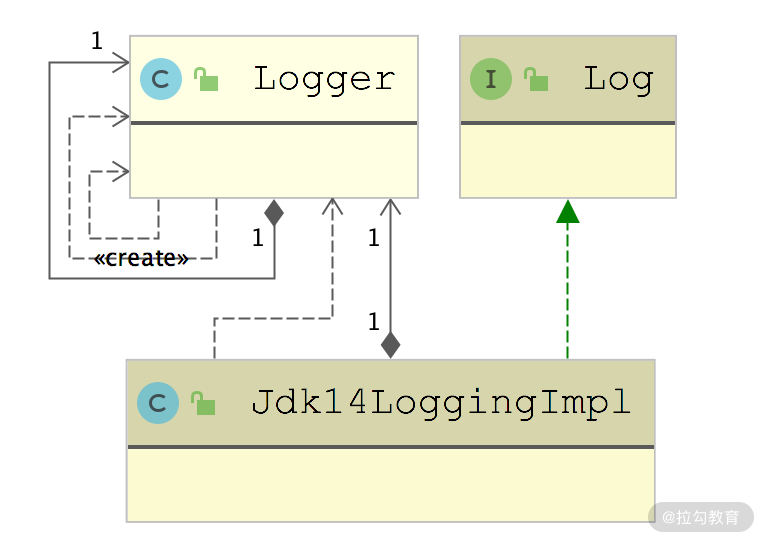
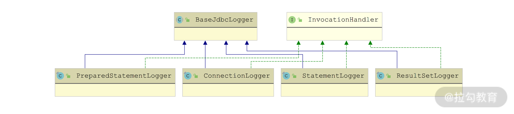

- 00 开篇词 领略 MyBatis 设计思维，突破持久化技术瓶颈.md.html
- 01 常见持久层框架赏析，到底是什么让你选择 MyBatis？.md.html
- 02 订单系统持久层示例分析，20 分钟带你快速上手 MyBatis.md.html
- 03 MyBatis 源码环境搭建及整体架构解析.md.html
- 04 MyBatis 反射工具箱：带你领略不一样的反射设计思路.md.html
- 05 数据库类型体系与 Java 类型体系之间的“爱恨情仇”.md.html
- 06 日志框架千千万，MyBatis 都能兼容的秘密是什么？.md.html
- 07 深入数据源和事务，把握持久化框架的两个关键命脉.md.html
- 08 Mapper 文件与 Java 接口的优雅映射之道.md.html
- 09 基于 MyBatis 缓存分析装饰器模式的最佳实践.md.html
- 10 鸟瞰 MyBatis 初始化，把握 MyBatis 启动流程脉络（上）.md.html
- 11 鸟瞰 MyBatis 初始化，把握 MyBatis 启动流程脉络（下）.md.html
- 12 深入分析动态 SQL 语句解析全流程（上）.md.html
- 13 深入分析动态 SQL 语句解析全流程（下）.md.html
- 14 探究 MyBatis 结果集映射机制背后的秘密（上）.md.html
- 15 探究 MyBatis 结果集映射机制背后的秘密（下）.md.html
- 16 StatementHandler：参数绑定、SQL 执行和结果映射的奠基者.md.html
- 17 Executor 才是执行 SQL 语句的幕后推手（上）.md.html
- 18 Executor 才是执行 SQL 语句的幕后推手（下）.md.html
- 19 深入 MyBatis 内核与业务逻辑的桥梁——接口层.md.html
- 20 插件体系让 MyBatis 世界更加精彩.md.html
- 21 深挖 MyBatis 与 Spring 集成底层原理.md.html
- 22 基于 MyBatis 的衍生框架一览.md.html
- 23 结束语 会使用只能默默“搬砖”，懂原理才能快速晋升.md.html
06 日志框架千千万，MyBatis 都能兼容的秘密是什么？
Apache Commons Logging、Log4j、Log4j2、java.util.logging 等是 Java 开发中常用的几款日志框架，这些日志框架来源于不同的开源组织，给用户暴露的接口也有很多不同之处，所以很多开源框架会自己定义一套统一的日志接口，兼容上述第三方日志框架，供上层使用。
一般实现的方式是使用适配器模式，将各个第三方日志框架接口转换为框架内部自定义的日志接口。MyBatis 也提供了类似的实现。
适配器模式
适配器模式主要解决的是由于接口不能兼容而导致类无法使用的问题，这在处理遗留代码以及集成第三方框架的时候用得比较多。其核心原理是：通过组合的方式，将需要适配的类转换成使用者能够使用的接口。
适配器模式的类图如下所示：
适配器模式类图
在该类图中，你可以看到适配器模式涉及的三个核心角色。
- 目标接口（Target）：使用者能够直接使用的接口。以处理遗留代码为例，Target 就是最新定义的业务接口。
- 需要适配的类/要使用的实现类（Adaptee）：定义了真正要执行的业务逻辑，但是其接口不能被使用者直接使用。这里依然以处理遗留代码为例，Adaptee 就是遗留业务实现，由于编写 Adaptee 的时候还没有定义 Target 接口，所以 Adaptee 无法实现 Target 接口。
- 适配器（Adapter）：在实现 Target 接口的同时，维护了一个指向 Adaptee 对象的引用。Adapter 底层会依赖 Adaptee 的逻辑来实现 Target 接口的功能，这样就能够复用 Adaptee 类中的遗留逻辑来完成业务。
适配器模式带来的最大好处就是复用已有的逻辑，避免直接去修改 Adaptee 实现的接口，这符合开放-封闭原则（也就是程序要对扩展开放、对修改关闭）。
MyBatis 使用的日志接口是自己定义的 Log 接口，但是 Apache Commons Logging、Log4j、Log4j2 等日志框架提供给用户的都是自己的 Logger 接口。为了统一这些第三方日志框架，MyBatis 使用适配器模式添加了针对不同日志框架的 Adapter 实现，使得第三方日志框架的 Logger 接口转换成 MyBatis 中的 Log 接口，从而实现集成第三方日志框架打印日志的功能。
日志模块
MyBatis 自定义的 Log 接口位于 org.apache.ibatis.logging 包中，相关的适配器也位于该包中，下面我们就来看看该模块的具体实现。
首先是 LogFactory 工厂类，它负责创建 Log 对象。这些 Log 接口的实现类中，就包含了多种第三方日志框架的适配器，如下图所示：

Log 接口继承关系图
在 LogFactory 类中有一段静态代码块，其中会依次加载各个第三方日志框架的适配器。在静态代码块执行的 tryImplementation() 方法中，首先会检测 logConstructor 字段是否为空，如果不为空，则表示已经成功确定当前使用的日志框架，直接返回；如果为空，则在当前线程中执行传入的 Runnable.run() 方法，尝试确定当前使用的日志框架。
以 JDK Logging 的加载流程（useJdkLogging() 方法）为例，其具体代码实现和注释如下：
public static synchronized void useJdkLogging() {
setImplementation(org.apache.ibatis.logging.jdk14.Jdk14LoggingImpl.class);
}
private static void setImplementation(Class<? extends Log> implClass) {
try {
// 获取implClass这个适配器的构造方法
Constructor<? extends Log> candidate = implClass.getConstructor(String.class);
// 尝试加载implClass这个适配器，加载失败会抛出异常
Log log = candidate.newInstance(LogFactory.class.getName());
// 加载成功，则更新logConstructor字段，记录适配器的构造方法
logConstructor = candidate;
} catch (Throwable t) {
throw new LogException("Error setting Log implementation. Cause: " + t, t);
}
}
下面我们以 Jdk14LoggingImpl 为例介绍一下 MyBatis Log 接口的实现。
Jdk14LoggingImpl 作为 Java Logging 的适配器，在实现 MyBatis Log 接口的同时，在内部还封装了一个 java.util.logging.Logger 对象（这是 JDK 提供的日志框架），如下图所示：

Jdk14LoggingImpl 继承关系图
Jdk14LoggingImpl 对 Log 接口的实现也比较简单，其中会将日志输出操作委托给底层封装的java.util.logging.Logger 对象的相应方法，这与前文介绍的典型适配器模式的实现完全一致。Jdk14LoggingImpl 中的核心实现以及注释如下：
public class Jdk14LoggingImpl implements Log {
// 指向一个java.util.logging.Logger对象
private final Logger log;
public Jdk14LoggingImpl(String clazz) {
// 初始化log字段
log = Logger.getLogger(clazz);
}
@Override
public void error(String s, Throwable e) {
// 全部调用依赖java.util.logging.Logger对象进行实现
log.log(Level.SEVERE, s, e);
}
// 省略其他级别的日志输出方法
}
在 MyBatis 的 org.apache.ibatis.logging 包下面，除了集成三方日志框架的适配器实现之外，还有一个 jdbc 包，这个包的功能不是将日志写入数据库中，而是将数据库操作涉及的信息通过指定的 Log 打印到日志文件中。我们可以通过这个包，将执行的 SQL 语句、SQL 绑定的参数、SQL 执行之后影响的行数等信息，统统打印到日志中，这个功能主要是在测试环境进行调试的时候使用，很少在线上开启，因为这会产生非常多的日志，拖慢系统性能。
代理模式
在后面即将介绍的 org.apache.ibatis.logging.jdbc 包中，使用到了 JDK 动态代理的相关知识，所以这里我们就先来介绍一下经典的静态代理模式，以及 JDK 提供的动态代理。
1. 静态代理模式
经典的静态代理模式，其类图如下所示：
代理模式类图
从该类图中，你可以看到与代理模式相关的三个核心角色。
- Subject：程序中的业务接口，定义了相关的业务方法。
- RealSubject：实现了 Subject 接口的业务实现类，其实现中完成了真正的业务逻辑。
- Proxy：代理类，实现了 Subject 接口，其中会持有一个 Subject 类型的字段，指向一个 RealSubject 对象。
在使用的时候，会将 RealSubject 对象封装到 Proxy 对象中，然后访问 Proxy 的相关方法，而不是直接访问 RealSubject 对象。在 Proxy 的方法实现中，不仅会调用 RealSubject 对象的相应方法完成业务逻辑，还会在 RealSubject 方法执行前后进行预处理和后置处理。
通过对代理模式的描述可知，Proxy 能够控制使用方对 RealSubject 对象的访问，或是在执行业务逻辑之前执行统一的预处理逻辑，在执行业务逻辑之后执行统一的后置处理逻辑。
代理模式除了实现访问控制以外，还能用于实现延迟加载。例如，查询数据库涉及网络 I/O 和磁盘 I/O，会是一个比较耗时的操作，有些时候从数据库加载到内存的数据，也并非系统真正会使用到的数据，所以就有了延迟加载这种优化操作。
延迟加载可以有效地避免数据库资源的浪费，其主要原理是：用户在访问数据库时，会立刻拿到一个代理对象，此时并没有执行任何 SQL 到数据库中查询数据，代理对象中自然也不会包含任何真正的有效数据；当用户真正需要使用数据时，会访问代理对象，此时会由代理对象去执行 SQL，完成数据库的查询。MyBatis 也提供了延迟加载功能，原理大同小异，具体的实现方式也是通过代理实现的。
针对每个 RealSubject 类，都需要创建一个 Proxy 代理类，当 RealSubject 这种需要被代理的类变得很多的时候，相应地就需要定义大量的 Proxy 类，这也是经典代理模式面临的一个问题。JDK 动态代理可以有效地解决这个问题，所以接下来我们就来一起分析 JDK 动态代理的核心原理。
2. JDK 动态代理
JDK 动态代理的核心是 InvocationHandler 接口。这里我先给出了一个 InvocationHandler 的示例实现，如下所示：
public class DemoInvokerHandler implements InvocationHandler {
private Object target; // 真正的业务对象，也就是RealSubject对象
// DemoInvokerHandler构造方法
public DemoInvokerHandler(Object target) {
this.target = target;
}
public Object invoke(Object proxy, Method method, Object[] args)
throws Throwable {
... // 在执行业务逻辑之前的预处理逻辑
Object result = method.invoke(target, args);
... // 在执行业务逻辑之后的后置处理逻辑
return result;
}
public Object getProxy() {
// 创建代理对象
return Proxy.newProxyInstance(Thread.currentThread()
.getContextClassLoader(),
target.getClass().getInterfaces(), this);
}
}
接下来，我们可以创建一个 main() 方法来模拟使用方创建并使用 DemoInvokerHandler 动态生成代理对象，示例代码如下：
public class Main {
public static void main(String[] args) {
Subject subject = new RealSubject();
DemoInvokerHandler invokerHandler =
new DemoInvokerHandler(subject);
// 获取代理对象
Subject proxy = (Subject) invokerHandler.getProxy();
// 调用代理对象的方法，它会调用DemoInvokerHandler.invoke()方法
proxy.operation();
}
}
现在假设有多个业务逻辑类，需要相同的预处理逻辑和后置处理逻辑，那么只需要提供一个 InvocationHandler 接口实现类即可。在程序运行过程中，JDK 动态代理会为每个业务类动态生成相应的代理类实现，并加载到 JVM 中，然后创建对应的代理实例对象。
下面我们就接着来深入分析一下 JDK 动态代理底层动态创建代理类的原理。不同 JDK 版本 Proxy 类的实现会有些许差异，但总体的核心思路基本一致，这里我们就以 JDK 1.8.0 版本为例进行说明。
首先，从前面的示例代码中可以看出，JDK 动态代理的入口方法是 Proxy.newProxyInstance()，这个静态方法有以下三个参数。
- loader（ClassLoader 类型）：加载动态生成的代理类的类加载器。
- interfaces（Class[] 类型）：业务类实现的接口。
- h（InvocationHandler 类型）：自定义的 InvocationHandler 对象。
下面进入 Proxy.newProxyInstance() 方法，查看其具体实现如下：
public static Object newProxyInstance(ClassLoader loader,
Class[] interfaces, InvocationHandler h)
throws IllegalArgumentException {
final Class<?>[] intfs = interfaces.clone();
... // 省略权限检查等代码
Class<?> cl = getProxyClass0(loader, intfs); // 获取代理类
... // 省略try/catch代码块和相关异常处理
// 获取代理类的构造方法
final Constructor<?> cons = cl.getConstructor(constructorParams);
final InvocationHandler ih = h;
return cons.newInstance(new Object[]{h}); // 创建代理对象
}
从 newProxyInstance() 方法的具体实现代码中我们可以看到，JDK 动态代理是在 getProxyClass0() 方法中完成代理类的生成和加载。getProxyClass0() 方法的具体实现如下：
private static Class getProxyClass0 (ClassLoader loader,
Class... interfaces) {
// 边界检查，限制接口数量（略）
// 如果指定的类加载器中已经创建了实现指定接口的代理类，则查找缓存；
// 否则通过ProxyClassFactory创建实现指定接口的代理类
return proxyClassCache.get(loader, interfaces);
}
proxyClassCache 是定义在 Proxy 类中一个静态字段，它是 WeakCache 类型的集合，用于缓存已经创建过的代理类，具体定义如下：
private static final WeakCache<ClassLoader, Class<?>[], Class<?>> proxyClassCache
= new WeakCache<>(new KeyFactory(),
new ProxyClassFactory());
WeakCache.get() 方法会首先尝试从缓存中查找代理类，如果查找失败，则会创建相应的 Factory 对象并调用其 get() 方法获取代理类。Factory 是 WeakCache 中的内部类，在 Factory.get() 方法中会通过 ProxyClassFactory.apply() 方法创建并加载代理类。
在 ProxyClassFactory.apply() 方法中，首先会检测代理类需要实现的接口集合，然后确定代理类的名称，之后创建代理类并将其写入文件中，最后加载代理类，返回对应的 Class 对象用于后续的实例化代理类对象。该方法的具体实现如下：
public Class apply(ClassLoader loader, Class[] interfaces) {
// ... 对interfaces集合进行一系列检测（略）
// ... 选择定义代理类的包名（略）
// 代理类的名称是通过包名、代理类名称前缀以及编号这三项组成的
long num = nextUniqueNumber.getAndIncrement();
String proxyName = proxyPkg + proxyClassNamePrefix + num;
// 生成代理类，并写入文件
byte[] proxyClassFile = ProxyGenerator.generateProxyClass(
proxyName, interfaces, accessFlags);
// 加载代理类，并返回Class对象
return defineClass0(loader, proxyName, proxyClassFile, 0,
proxyClassFile.length);
}
ProxyGenerator.generateProxyClass() 方法会按照指定的名称和接口集合生成代理类的字节码，并根据条件决定是否保存到磁盘上。该方法的具体代码如下：
public static byte[] generateProxyClass(final String name,
Class[] interfaces) {
ProxyGenerator gen = new ProxyGenerator(name, interfaces);
// 动态生成代理类的字节码，具体生成过程不再详细介绍
final byte[] classFile = gen.generateClassFile();
// 如果saveGeneratedFiles值为true，会将生成的代理类的字节码保存到文件中
if (saveGeneratedFiles) {
java.security.AccessController.doPrivileged(
new java.security.PrivilegedAction() {
public Void run() {
// 省略try/catch代码块
FileOutputStream file = new FileOutputStream(
dotToSlash(name) + ".class");
file.write(classFile);
file.close();
return null;
}
}
);
}
return classFile; // 返回上面生成的代理类的字节码
}
最后，为了清晰地看到 JDK 动态生成的代理类的真正代码，我们需要将上述生成的代理类的字节码进行反编译。上述示例为 RealSubject 生成的代理类，反编译后得到的代码如下：
public final class $Proxy143
extends Proxy implements Subject { // 实现了Subject接口
// 这里省略了从Object类继承下来的相关方法和属性
private static Method m3;
static {
// 省略了try/catch代码块
// 记录了operation()方法对应的Method对象
m3 = Class.forName("design.proxy.Subject")
.getMethod("operation", new Class[0]);
}
// 构造方法的参数就是我们在示例中使用的DemoInvokerHandler对象
public $Proxy11(InvocationHandler var1) throws {
super(var1);
}
public final void operation() throws {
// 省略了try/catch代码块
// 调用DemoInvokerHandler对象的invoke()方法
// 最终调用RealSubject对象的对应方法
super.h.invoke(this, m3, (Object[]) null);
}
}
到此为止，JDK 动态代理的基本使用以及核心原理就分析完了。这里我做一个简单的总结，JDK 动态代理的实现原理是：动态创建代理类，然后通过指定类加载器进行加载。在创建代理对象时，需要将 InvocationHandler 对象作为构造参数传入；当调用代理对象时，会调用 InvocationHandler.invoke() 方法，从而执行代理逻辑，最终调用真正业务对象的相应方法。
JDBC Logger
了解了代理模式以及 JDK 动态代理的基础知识之后，下面我们开始分析 org.apache.ibatis.logging.jdbc 包中的内容。
首先来看其中最基础的抽象类—— BaseJdbcLogger，它是 jdbc 包下其他 Logger 类的父类，继承关系如下图所示：

BaseJdbcLogger 继承关系图
在 BaseJdbcLogger 这个抽象类中，定义了 SET_METHODS 和 EXECUTE_METHODS 两个 Set 类型的集合。其中，SET_METHODS 用于记录绑定 SQL 参数涉及的全部 set*() 方法名称，例如 setString() 方法、setInt() 方法等。EXECUTE_METHODS 用于记录执行 SQL 语句涉及的所有方法名称，例如 execute() 方法、executeUpdate() 方法、executeQuery() 方法、addBatch() 方法等。这两个集合都是在 BaseJdbcLogger 的静态代码块中被填充的。
从上面的 BaseJdbcLogger 继承关系图中可以看到，BaseJdbcLogger 的子类同时会实现 InvocationHandler 接口。
我们先来看其中的 ConnectionLogger 实现，其底层维护了一个 Connection 对象的引用，在ConnectionLogger.newInstance() 方法中会使用 JDK 动态代理的方式为这个 Connection 对象创建相应的代理对象。
invoke() 方法是代理对象的核心方法，在该方法中，ConnectionLogger 会为 prepareStatement()、prepareCall()、createStatement() 三个方法添加代理逻辑。下面来看 invoke() 方法的具体实现，具体代码以及注释如下：
public Object invoke(Object proxy, Method method, Object[] params)
throws Throwable {
try {
if (Object.class.equals(method.getDeclaringClass())) {
// 如果调用的是从Object继承的方法，则直接调用，不做任何拦截
return method.invoke(this, params);
}
// 调用prepareStatement()方法、prepareCall()方法的时候，
// 会在创建PreparedStatement对象之后，用PreparedStatementLogger为其创建代理对象
if ("prepareStatement".equals(method.getName()) || "prepareCall".equals(method.getName())) {
if (isDebugEnabled()) {
// 通过statementLog这个Log输出日志
debug(" Preparing: " + removeExtraWhitespace((String) params[0]), true);
}
PreparedStatement stmt = (PreparedStatement) method.invoke(connection, params);
stmt = PreparedStatementLogger.newInstance(stmt, statementLog, queryStack);
return stmt;
} else if ("createStatement".equals(method.getName())) {
// 调用createStatement()方法的时候，
// 会在创建Statement对象之后，用StatementLogger为其创建代理对象
Statement stmt = (Statement) method.invoke(connection, params);
stmt = StatementLogger.newInstance(stmt, statementLog, queryStack);
return stmt;
} else {
// 除了上述三个方法之外，其他方法的调用将直接传递给底层Connection对象的相应方法处理
return method.invoke(connection, params);
}
} catch (Throwable t) {
throw ExceptionUtil.unwrapThrowable(t);
}
}
下面我们来看 PreparedStatementLogger，在其 invoke() 方法中调用了 SET_METHODS 集合中的方法、EXECUTE_METHODS 集合中的方法或 getResultSet() 方法时，会添加相应的代理逻辑。StatementLogger 中的 Invoke() 方法实现与之类似，这里就不再赘述。
最后我们再看下 ResultSetLogger 对 InvocationHandler 接口的实现，其中会针对 ResultSet.next() 方法进行后置处理，主要是打印结果集中每一行数据以及统计结果集总行数等信息，具体实现和注释如下：
public Object invoke(Object proxy, Method method, Object[] params) throws Throwable {
try {
if (Object.class.equals(method.getDeclaringClass())) {
// 如果调用Object的方法，则直接调用，不做任何其他处理
return method.invoke(this, params);
}
Object o = method.invoke(rs, params);
// 针对ResultSet.next()方法进行后置处理
if ("next".equals(method.getName())) {
if ((Boolean) o) { // 检测next()方法的返回值，确定是否还存在下一行数据
rows++; // 记录ResultSet中的行数
if (isTraceEnabled()) {
// 获取数据集的列元数据
ResultSetMetaData rsmd = rs.getMetaData();
// 获取数据集的列数
final int columnCount = rsmd.getColumnCount();
if (first) { // 如果是数据集的第一行数据，会输出表头信息
first = false;
// 这里除了输出表头，还会记录BLOB等超大类型的列名
printColumnHeaders(rsmd, columnCount);
}
// 输出当前遍历的这行记录，这里会过滤掉超大类型列的数据，不进行输出
printColumnValues(columnCount);
}
} else { // 完成结果集的遍历之后，这里会在日志中输出总行数
debug(" Total: " + rows, false);
}
}
clearColumnInfo(); // 清空column*集合
return o;
} catch (Throwable t) {
throw ExceptionUtil.unwrapThrowable(t);
}
}
总结
在这一讲中，我们主要介绍的是 MyBatis 基础模块中的日志模块。
- 首先，介绍了适配器模式的核心知识点，这也是日志模块底层的设计思想。
- 然后，说明了日志模块是如何基于适配器模式集成多种三方日志框架的。
- 接下来，详细讲解了静态代理模式以及 JDK 动态代理的实现原理。
- 最后，深入分析了 JDBC Logger 是如何基于 JDK 动态代理实现日志功能的。